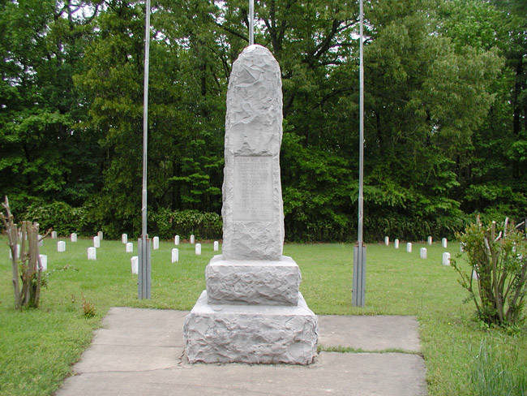
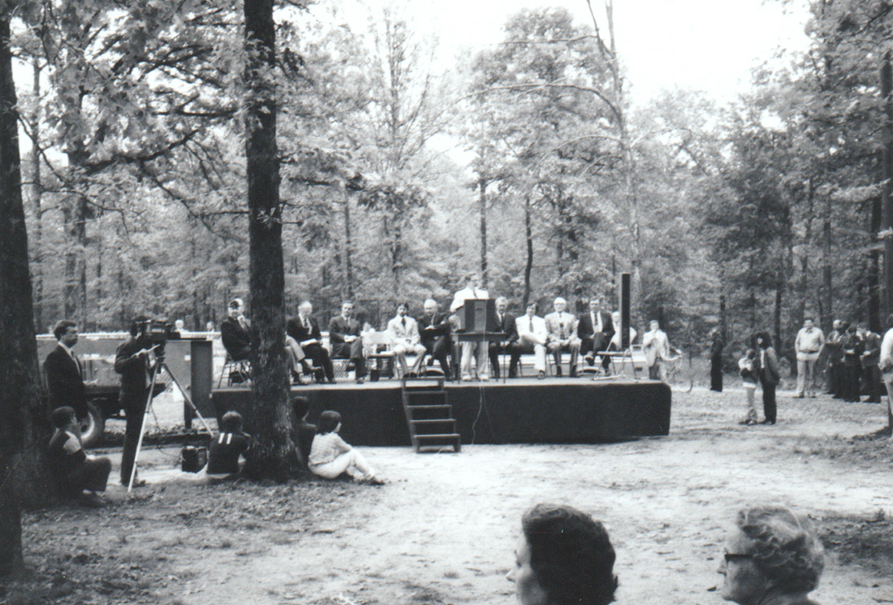

A narrative topic page compiled from council records, the Arkansas Leader, and the other sources listed at the bottom of the page. Resident discussion from Facebook groups is paraphrased into themes; no posts are quoted.
Old Austin: The Town the Railroad Left Behind
The story
Cabot is not the first town on its ground — it is the second. A few miles northeast of the present city, in the early 1820s, settlers established the community that became Austin, about thirty miles northeast of Little Rock on the road toward the White River. It was one of central Arkansas's earliest settlements, and for roughly fifty years it was the town in this part of what is now Lonoke County. Cabot exists because a railroad missed it.
The settlement went by several names before it had a permanent one — Oakland Grove, Oakland, Saundersville, and Atlanta all appear in its early history. James Erwin was among the first settlers, arriving in 1822. Isaac Dunaway and Colbert Moore built the first store in 1848. A road connecting the settlement to Des Arc on the White River brought trade, and for a brief time the town was a stop on the Butterfield Overland Mail stage line. Gabriel Conner and O. Chism opened a second store in 1852 and had the area's first flour mill running six years later. A post office named Oakland was established in 1855. In 1858, G. A. Skiliern and Associates bought roughly 800 acres near the settlement, had the land surveyed into blocks, and named the new town Austin — said to have been named in honor of an early settler.
By the Civil War, Austin was a complete small town: about thirty residences, several dry-goods stores, a grocery, a school, three doctors, a saddler, a tailor, three saloons, a hotel, a sawmill, a cotton gin, and a wool-carding factory. It was also a Baptist center. A church believed to date to the 1830s was called Austin Church by 1857; the Caroline Baptist Association was formed with its headquarters in Austin in 1853; and the Reverend James Moore, sometimes called the father of Arkansas Presbyterianism, had established the Austin Academy in 1844. A Methodist congregation also worshiped in town before the war.
The war came to Austin without a battle. Its men enlisted in the Austin Rifles, mustered in at Brownsville in the summer of 1861 as Company I of the Fifth Arkansas Infantry. In 1862, thousands of Confederate soldiers from Texas and Arkansas — perhaps as many as 20,000 — gathered in a sprawling encampment near the town, first called Camp Hope. That summer, a group of soldiers whose enlistments had expired mutinied over a lack of pay; after desertions, nine men were executed to deter others. In the fall, measles, typhoid, mumps, and other diseases swept the camp and killed as many as 1,500 soldiers, who were buried in graves scattered across the countryside. One of the dead was Allison Nelson, a former mayor of Atlanta and colonel of the Tenth Texas Infantry, who died of typhoid on October 7, 1862, days after receiving a brigadier general's commission; the camp was renamed Camp Nelson in his honor and abandoned by the end of the year. Union forces later used Austin's Methodist church building as a hospital and tore down many of the town's buildings for winter quarters. A resident who returned after the war described a town destroyed, with no business of any kind.
Austin recovered slowly. George Murrell opened the Austin Nursery about a mile and a half west of town in 1872; it became an award-winning plant nursery. A newspaper, The Triumph, was founded in 1879 and lasted a couple of years. Then came the event the town had hoped would secure its future. When the railroad — the Cairo & Fulton, building as the St. Louis, Iron Mountain and Southern — came through the area in 1872–73, the tracks were laid about a mile southeast of Austin. Local tradition holds that a farmer refused to sell the railroad the right of way through his farm; that story is tradition, not documented fact, and this page carries it as tradition. What is documented is the result: people began building along the tracks, some Austin buildings were dismantled and rebuilt at the new site, and by 1900 the railroad town — Austin Station — had grown to almost 200 people. A water and fuel stop a few miles southwest on the same line became Cabot. To distinguish the two Austins, the old town picked up the prefix it still carries: Old Austin. The station town eventually took the plain name for itself.

Old Austin had one more moment. In 1886, Arkansas Baptists were choosing a site for Ouachita Baptist College, and Austin was one of eight towns that made a presentation. The Encyclopedia of Arkansas calls it a formidable competitor, while conceding its chances were remote — Little Rock was also competing for a central Arkansas site. The college went to Arkadelphia, where it remains. After that, the fade was steady: within a short time, the Encyclopedia records, only the school, one store, the blacksmith, two cemeteries, and a few houses remained in Old Austin.
The cemeteries tell the longer story. At the turn of the twentieth century, local Confederate veterans organized to gather the Camp Nelson dead into a formal burial ground. Veteran James Gately sold a small tract for the purpose for one dollar, and in 1905 state legislator Sevin Smith secured a $1,000 state appropriation. Crews searched the countryside for the scattered graves, exhumed the remains, and reinterred them at the new cemetery; 428 individual headstones, carved from Independence County limestone, were set in four equal sections around a twelve-foot central monument. (Physical evidence uncovered in 1980 indicated the dead were actually reinterred in a single trench — the stones are memorials, not one-to-one graves.) One date in this story is genuinely unsettled: the Encyclopedia of Arkansas and Find a Grave date the relocation to 1905, while the City of Cabot's own history page says 1907. The sources disagree, and this site carries the date as disputed rather than picking one, exactly as it does on its home page.
Yearly memorial services were held at Camp Nelson until the late 1930s; when they ceased, the cemetery went to brush. Its rescue came from Cabot's schools: in the early 1980s, Cabot High School ROTC instructor Sergeant J. O. Isaac led a restoration backed by a $23,000 state appropriation, with Future Farmers of America and ROTC students, Isaac, and three other high school teachers clearing trees, leveling the ground, building a new fence and gate, and setting government headstones during the summer of 1981. A formal rededication followed in the spring of 1982, and the cemetery was added to the National Register of Historic Places in 1996. The state once provided a $10,000 annual appropriation for upkeep; it was discontinued in the late 1990s, and the Encyclopedia's plain summary of the arrangement ever since is that upkeep rests in the hands of interested individuals. A local school group still places flags on the graves each spring.

The town's one substantial antebellum survivor is a house. The Sears House, on Moss Lane southeast of the junction of Arkansas Highways 38 and 319, was built about 1860 — a single-story wood-frame house whose Greek Revival entrance portico and Italianate bracketed gables make it, per its National Register documentation, a rare surviving example of its kind in the region. It was listed on the National Register on August 5, 1992. Between the Sears House, Camp Nelson, and the town's own pioneer cemetery, what remains of old Austin is mostly what was built to last or built to remember.
The name, meanwhile, had a second career. Austin Station — today's Austin — incorporated on October 22, 1895, and lived the railroad town's quieter version of the same century: nearly 200 people in 1900, a low of 123 in 1930, its one-room school eventually closed and its district consolidated into Cabot's. The highway era reversed the railroad era's verdict. Improvements to Highway 67 (now Interstate 57) drew workers from the Jacksonville ordnance plant and then Little Rock Air Force Base, and a building boom after 1990 filled subdivisions west of the highway: 605 people in 2000, 2,038 in 2010, 3,460 in 2020. Present-day Austin is a separate second-class city with its own post office, two restaurants, and several churches; it has no schools of its own and sits inside the Cabot school district — the Cabot district's own description lists Cabot, Austin, and Ward as its cities. Each September, Austin holds Austin Fest, a parade-and-car-show festival that raises money for the volunteer fire department. Old Austin, unincorporated, is the smaller place now: as of the Encyclopedia's 2010 account it had one store, and its name survives in daily use mostly through its two churches — Old Austin Baptist and Old Austin United Methodist, both still active in local church listings — and through the cemeteries. The elder sister ended as the bedroom community; the upstart at the water stop became the county's largest city. The railroad decided which, in about a mile of track placement — but it took the highway, a century later, to make the bypassed town's namesake grow again.
Timeline
- - 1822 — James Erwin among the first settlers at the community later named Austin; earlier names include Oakland Grove, Oakland, Saundersville, and Atlanta.
- - 1844 — The Reverend James Moore establishes the Austin Academy.
- - 1848 — Isaac Dunaway and Colbert Moore build the settlement's first store.
- - 1853 — The Caroline Baptist Association is formed with headquarters in Austin.
- - 1855 — A post office named Oakland is established.
- - 1858 — G. A. Skiliern and Associates buy about 800 acres, survey the town into blocks, and name it Austin; a flour mill begins operating the same year. The town serves briefly as a Butterfield Overland Mail stop in this era.
- - 1861 — The Austin Rifles muster in at Brownsville as Company I, Fifth Arkansas Infantry.
- - 1862 — Camp Hope, a Confederate encampment of perhaps 20,000 men, gathers near Austin; a summer mutiny ends with nine executions; fall epidemics kill as many as 1,500. Brigadier General Allison Nelson dies October 7, 1862, and the camp is renamed Camp Nelson, then abandoned by year's end.
- - 1872 — George Murrell opens the Austin Nursery west of town.
- - 1872–73 — The railroad builds through the area, its tracks passing about a mile southeast of Austin; building begins at Austin Station, and a water stop a few miles southwest becomes Cabot.
- - 1879 — The Triumph, an Austin newspaper, is founded; it publishes only a couple of years.
- - 1886 — Austin is one of eight towns presenting for Ouachita Baptist College; Arkadelphia is chosen.
- - 1895 — Austin Station — today's city of Austin — incorporates on October 22.
- - 1900 — Austin Station has grown to almost 200 people; the old town is becoming known as Old Austin.
- - 1905 or 1907 — disputed — The Camp Nelson dead are gathered from countryside graves and reinterred in a formal cemetery with 428 headstones and a central monument, funded by a $1,000 state appropriation (1905) obtained by legislator Sevin Smith; the City of Cabot's history page dates the relocation to 1907.
- - 1930 — The city of Austin's population bottoms out at 123.
- - Late 1930s — Yearly memorial services at Camp Nelson cease; the cemetery becomes overgrown.
- - Summer 1981 – spring 1982 — Cabot High School ROTC and FFA students, led by Sergeant J. O. Isaac, restore Camp Nelson with a $23,000 state appropriation; a formal rededication is held in spring 1982.
- - August 5, 1992 — The Sears House (built about 1860) is listed on the National Register of Historic Places.
- - 1996 — Camp Nelson Confederate Cemetery is added to the National Register of Historic Places.
- - Late 1990s — The state's $10,000 annual upkeep appropriation for Camp Nelson is discontinued; care passes to interested individuals.
- - 2010 — The Encyclopedia counts one store left in Old Austin; the city of Austin's census count is 2,038.
- - April 2019 — A Cabot Public Library history fair includes local historians answering questions about the restoration of the Old Austin Pioneer Cemetery.
- - 2020 — The city of Austin's population reaches 3,460 in the census.
What residents remember
Old Austin's presence in Cabot's Facebook groups is real but present-tense: it survives as a place people live, worship, and file weather reports from — not as a history anyone reconstructs. In Cabot Strong, "Old Austin" names a community: a March 2026 post reporting pea-size hail in Old Austin, a June 2026 question about Vacation Bible School at Old Austin Baptist Church, a December 2024 question about what was being built on Highway 38 next to Old Austin United Methodist Church, a September 2024 photo post about cruising down Old Austin that drew 86 reactions and 20 comments, and a November 2024 genealogy post from a resident looking to connect with extended family descended from a grandfather from "the old Austin area." The antebellum town — the stores, the academy, the college bid — does not come up. The name means the church community and the neighborhood now.
Camp Nelson is the exception, and it is a large one: the cemetery has a living memory culture in the groups that nothing else in Old Austin's story matches. Its most engaged post is a May 2025 introduction in Cabot Strong (372 reactions, 99 comments) from a young woman who describes herself as the cemetery's caretaker, visiting weekly to check on the graves; the comments run to gratitude, offers of volunteer labor and scout service projects, and a link to a short documentary about the cemetery circulating among residents. A November 2023 post (231 reactions, 64 comments) from a woman who grew up in Cabot from 1997 to 2008 and had moved back with her own family remembered the cemetery as a major part of her childhood — she had regularly played on the small playground beside it — and treated it as a hometown landmark worth introducing to her own children. For Cabot residents of that generation, Camp Nelson is not an abstraction; it is a place from childhood, four miles out, that they now bring their kids to.
The groups also keep the cemetery's unresolved question alive. An October 2023 Cabot Strong thread asked outright who owns Camp Nelson Confederate Cemetery (24 reactions, 53 comments), and the answers offered in the comments were several and incompatible: the State of Arkansas; the county judge, whom one commenter described as having a constitutional obligation to maintain it with county funds and employees; and simple volunteer stewardship. Commenters recalled earlier county judges — in the 1970s and after — sending county road crews and, in one era, correctional inmate labor to clear the overgrown grounds, and a later commenter revived the thread years afterward to ask whether the ownership question had ever been settled and how to reach whoever manages it. Cleanup offers, fence-line work reports, and headstone-washing plans fill out the thread. The Encyclopedia says upkeep rests with interested individuals; the thread is what that sentence looks like in practice.
The Sears House, by contrast, has no footprint in the groups at all. Searches for it in Cabot Strong, Cabot's Petty Citizens (BCOC), and WTF Cabot returned no substantive discussion — the best-documented antebellum building in the area passes unmentioned in the community's daily conversation. WTF Cabot and BCOC likewise returned no substantive threads on Old Austin's history or Camp Nelson in this pass; the memory record lives in Cabot Strong. Present-day Austin appears in the groups mainly through its fall festival at the fire station — vendor posts in October 2023 and October 2025 — the modern city's own small civic ritual, a mile and a world away from the town it was named for.
What the record shows
Established by documents: the settlement's early-1820s founding and its sequence of names; the 1848 first store, the 1855 Oakland post office, and the 1858 surveying and naming of Austin; the Civil War-era inventory of the town (about thirty residences, the stores, hotel, saloons, cotton gin, and wool-carding factory), as carried by the Encyclopedia of Arkansas from Goodspeed-era and Lonoke County Historical Society sources; Camp Nelson's 1862 epidemic toll of as many as 1,500 and the reinterment program's mechanics (the dollar land sale, the $1,000 appropriation, the 428 limestone headstones); the 1981–82 restoration and 1996 National Register listing; the Sears House's approximate 1860 construction and its August 5, 1992 National Register listing; and the modern city of Austin's incorporation date (October 22, 1895) and census series.
Disputed, and carried as disputed: the year the Camp Nelson remains were relocated — 1905 per the Encyclopedia of Arkansas and Find a Grave, 1907 per the City of Cabot's official history page. No source consulted reconciles the two, and this site does not choose.
Tradition, labeled as such: the farmer who refused the railroad its right of way. The Encyclopedia's Old Austin entry presents it explicitly as local tradition; no deed, railroad record, or contemporary account is cited for it. The same entry notes a piece of local folklore that Old Austin narrowly missed being chosen as the state capital — folklore again, offered without documentary support.
Where the sources disagree with each other: the Encyclopedia's two entries do not reconcile on the railroad's geometry. The Old Austin entry says the tracks were constructed about a mile southeast of the old town; the Austin entry says the railroad moved the settlement "a mile to the northwest of its original location." Both cannot be a complete description of the same move, and neither entry acknowledges the other. The 1886 college story also wants a caveat: "formidable competitor" is the Encyclopedia's characterization of Austin's bid, in the same paragraph that concedes its chances were remote once Little Rock entered for a central Arkansas site.
A paper record with a hole in it: in the Arkansas Leader's digitized archive from 2017 through 2026, Camp Nelson does not appear at all — no memorial coverage, no upkeep stories — and "Old Austin" appears almost exclusively as its two churches in church briefs and event notices, plus one April 2019 item about historians discussing the Old Austin Pioneer Cemetery's restoration at a library history fair. The town's history, as a public record, is carried by the Encyclopedia, the National Register files, and the Lonoke County Historical Society's newsletters — not by the local paper's recent archive.
Gaps: no source consulted gives a storefront-by-storefront account of Old Austin beyond the Civil War-era inventory, so the town cannot be reconstructed building by building the way its railroad-era successor sometimes can. The Sears House's builder and first owners are not identified in the sources used here — the Encyclopedia treats the house only through photographs, and its National Register summary records date, style, and location without saying who Sears was. Whether the 2019-discussed restoration of the Old Austin Pioneer Cemetery was carried out is not reported in the corpus. Old Austin itself, being unincorporated, has no separate population count; the one-store figure dates to the Encyclopedia's 2010 account and may not describe the community today.
Connected threads
- - First Street: The Railroad Town the Tornado Took — the other half of the 1873 decision: what grew at the water and fuel stop a few miles southwest while Austin faded, told from Cabot's side of the tracks.
- - The Tornado of March 29, 1976 — Cabot's own erasure came a century later and in an afternoon; Old Austin is the slow version of the same story, and Camp Nelson's restoration generation overlaps the tornado generation.
- - Growth, Traffic, and the Interchanges — the highway era partly reversed the railroad era's verdict: the modern city of Austin's subdivision boom after 1990 rode the same corridor growth that now defines the whole area's traffic argument.
Sources
- - Encyclopedia of Arkansas, "Old Austin (Lonoke County)," by Mike Polston — the settlement's names and founding, the Civil War inventory, the Butterfield stop, the railroad bypass and right-of-way tradition, buildings moved to Austin Station, the 1886 college presentation, and the town's fade to one store by 2010. Paraphrased, including the entry's own "local tradition" and "local folklore" labels. https://encyclopediaofarkansas.net/entries/old-austin-lonoke-county-5600/ (corpus:
encyclopedia-of-arkansas/old-austin-lonoke-county-5600.md) - - Encyclopedia of Arkansas, "Austin (Lonoke County)," by Steven Teske, Butler Center for Arkansas Studies — incorporation (October 22, 1895), the census series through 2020 (3,460), the 1889 Austin Station inventory, school consolidation into Cabot, and Austin Fest. Paraphrased. https://encyclopediaofarkansas.net/entries/austin-lonoke-county-6364/ (corpus:
encyclopedia-of-arkansas/austin-lonoke-county-6364.md) - - Encyclopedia of Arkansas, "Camp Nelson Confederate Cemetery," by Mike Polston — Camp Hope, the 1862 mutiny and epidemics, Allison Nelson, the 1905 reinterment and 428 headstones, the single-trench finding of 1980, the 1981–82 Isaac restoration, the 1996 National Register listing, and the end of the state upkeep appropriation. Paraphrased. https://encyclopediaofarkansas.net/entries/camp-nelson-confederate-cemetery-4275/ (corpus:
encyclopedia-of-arkansas/camp-nelson-confederate-cemetery-4275.md) - - Encyclopedia of Arkansas, "Cabot (Lonoke County)" — Austin as the area's original town three miles east, Camp Nelson's location about four miles southeast of Cabot and its 1996 listing. Paraphrased. (corpus:
encyclopedia-of-arkansas/cabot-lonoke-county-925.md) - - City of Cabot, official history page — the 1907 date for the Camp Nelson relocation (the other half of the disputed date) and the Cabot school district's inclusion of Austin. Via the corpus registry:
city-history/cabots-history-and-the-future.md. - - Wikipedia, "Sears House (Austin, Arkansas)," summarizing the National Register record (reference no. 92000952) — Moss Lane location southeast of the Highways 38/319 junction, construction about 1860, Greek Revival and Italianate elements, listed August 5, 1992. Web search, October 31, 2026. https://en.wikipedia.org/wiki/Sears_House_(Austin,_Arkansas)
- - Arkansas Leader (corpus texts, 2017–2026) — the April 10, 2019 Cabot Public Library history fair item naming the Old Austin Pioneer Cemetery restoration as a discussion topic; Old Austin United Methodist Church and Old Austin Baptist Church appearances in church briefs and event notices (e.g., February 14, 2018; January 1, 2020); and the absence of any Camp Nelson coverage across the decade's digitized issues, verified by full-text search of the corpus.
- - Facebook community groups (Cabot Strong; Cabot's Petty Citizens – BCOC; WTF CABOT ARKANSAS), searched October 31, 2026 with the terms "Old Austin," "Camp Nelson," "Sears House," and "Austin Fest." Findings used: Cabot Strong, May 5, 2025 (cemetery caretaker post, 372 reactions, 99 comments; a bounded read of comments — gratitude, volunteer and scout-project offers, a circulating short documentary); Cabot Strong, November 29, 2023 (childhood-memory post, 231 reactions, 64 comments); Cabot Strong, October 5, 2023 (ownership thread, 24 reactions, 53 comments; bounded comment read — state/county/volunteer answers, recollections of county-crew and inmate-labor cleanups, the question revived unsettled years later); Cabot Strong, October 14, 2023 (fence-repair offer at the cemetery); present-day Old Austin posts (September 7, 2024 cruising post, 86 reactions, 20 comments; November 17, 2024 genealogy post; December 3, 2024 construction question beside Old Austin United Methodist Church; March 15, 2026 hail report; June 3, 2026 church question); Austin fall-festival vendor posts (October 28, 2023; October 25, 2025). BCOC and WTF Cabot searches returned no substantive Old Austin, Camp Nelson, or Sears House discussion. Themes paraphrased only; no posts or comments quoted, and no private individuals named.
- - Lonoke County Historical Society newsletters (as cited in the Encyclopedia's Old Austin entry: "Early Days of Austin," "A Ghost Town of Arkansas," and others) — the local-history layer beneath the Encyclopedia's account; noted here for provenance, not directly consulted for this page.